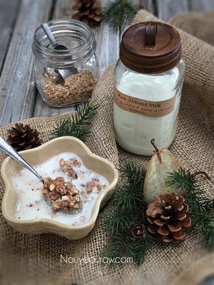

Fig’n Pear Muesli

~ raw, vegan, gluten-free ~
This Fig’n Pear Muesli started with a base of granola; then I broke that down to crunchy, nutty, ginger warming, sweetened pear nuggets. There is a whole lotta’ yum in that there spoonful!
Once the cereal was ready and made its way into the bowl, I added some homemade almond milk and set it aside to soak. This is a common practice with muesli. It’s a Scandinavian tradition to soak the cereal overnight in either milk, yogurt or fruit juice. After many hours had passed, I couldn’t resist and had to give it the old taste test. Instantly Grape Nuts cereal came to mind.
Before, I continue, I should quickly state that I am not comparing the taste of this muesli to that of Grape Nuts… more the texture and nostalgic feeling that it gave to me. Grape Nuts soaked in warm milk was a childhood favorite of mine, a wonderful, mildly sweet, brown, porridge-like texture. That is exactly what this muesli reminded me of.
Since just one bite of this muesli took me down memory lane, I got curious what exactly are Grape Nuts made from?. I mean really, doesn’t the name say it all… grape…nuts? But the truth be told, it doesn’t contain either of those ingredients.
It is made of wheat flour, malted barley flour, isolated soy protein, salt, whole grain barley flour, malt extract, and dried yeast. They must have landed upon something really good because the recipe has remained largely unchanged since its introduction over 100 years ago! If you are the least bit interested in the history of how this cereal got it’s name, click (here).
Well, fiddlesticks… all this talk about Grape Nuts is causing my mind to race with ideas. I sense a few sleepless nights pondering over another creation. I hope that you enjoy this recipe. Please comment below and have a wonderful day. amie sue
Yields 8 cups wet batter
- 2 cups raw, gluten-free rolled oats, soaked
- 2 cups raw almonds, soaked
- 2 cups raw hazelnuts, soaked
- 3 cups chopped fresh figs
- 3 cups chopped fresh pears
- 1/3 cup date paste
- 1/3 cup raw honey or maple syrup
- 2 Tbsp vanilla extract
- 2 tsp Ceylon cinnamon
- 1 tsp Himalayan pink salt
Preparation:
- The prep work is to get the nuts and oats soaking. Click on their links to learn how. If you already have soaked and dehydrated nuts on hand, you can use them as is.
- After soaking the nuts, drain and discard the soak water.
- Drain and rinse the oats until the water starts to run more clear.
- Place the oats and nuts in the food processor and process until the nuts are in small pieces.
- Add the figs, pears, date paste, sweetener, vanilla, cinnamon and salt to the food processor and blitz until everything comes together.
- Depending on the size of processor that you own, you may need to do this in two batches. If you do make two batches, then combine both in a large bowl and stir until combined.
- Feel free to use any liquid sweetener that suits you.
- Spread the batter on the non–stick teflex sheets that come with the dehydrator and dry at 145 degrees (F) for 1 hour, then reduce to 115 degrees (F) for approximately 16-24 hours or until dry.
- At the halfway mark, flip the teflex sheet over onto the mesh sheet and peel away the teflex. This will decrease the drying time.
- Dry times will always vary depending on your climate, humidity, dehydrator model and how full it is.
- Allow the batter to fully cool before moving onto the next step
- Place the dried batter in the food processor, fitted with the “S” blade. Pulse until it reaches a small mealy texture. The finer you grind it down to, the more porridge-like it will be.
- Store in an airtight container on the counter for roughly a week, but you can freeze it for ups to 3 months to extend the shelf life.
The Institute of Culinary Ingredients™
- To learn more about maple syrup by clicking (here).
- Raw honey isn’t vegan, but I still use now and again. Read (here) why I like to.
- Dates are an amazing ingredient for raw food recipes, click (here) to read why.
- Why do I specify Ceylon cinnamon? Click (here) to learn why.
- What is Himalayan pink salt and does it really matter? Click (here) to read more about it.
- Are oats gluten-free? Yes, read more about that (here).
- Are oats raw? Yes, they can be found. Click (here) to learn more.
- Do I need to soak and dehydrate oats? Not required but recommended. Click (here) to see why.
Culinary Explanations:
- Why do I start the dehydrator at 145 degrees (F)? Click (here) to learn the reason behind this.
- When working with fresh ingredients, it is important to taste test as you build a recipe. Learn why (here).
- Don’t own a dehydrator? Learn how to use your oven (here). I do however truly believe that it is a worthwhile investment. Click (here) to learn what I use.

© AmieSue.com